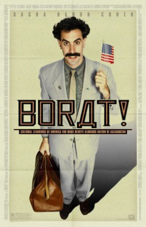

#8125 Borat: Kulturelle Lernung von Amerika um Benefiz für glorreiche Nation von Kasachstan zu machen
Alternativ: Borat: Cultural Learnings of America for Make Benefit Glorious Nation of Kazakhstan
 
 IMDB-Wertung: 7.3 / 10
IMDB-Wertung: 7.3 / 10  Metascore: 0
Metascore: 0 
Borat Sagdiyev is a TV reporter of a popular show in Kazakhstan as Kazakhstan's sixth most famous man and a leading journalist. He is sent from his home to America by his government to make a documentary about American society and culture. Borat takes a course in New York City to understand American humor. While watching Baywatch on TV, Borat discovers how beautiful their women are in the form of C. J. Parker, who was played by actress Pamela Anderson who hails from Malibu, California. He decides to go on a cross-country road trip to California in a quest to make her his wife and take her back to his country. On his journey Borat and his producer encounter a country full of strange and wonderful Americans, real people in real chaotic situations with hysterical consequences.
Jahr: 2006
Dauer: 84 Minuten
FSK: 12
Land: USA Studio: 20th Century FoxTonspuren: DTS - ,
Untertitel: Deutsch, Englisch,
Auflösung: 1080p (1920x1040) Größe: 6133 MB
Genre: Komödie
Regisseur: Larry Charles
Drehbuch: Sacha Baron Cohen
Soundtrack: Erran Baron Cohen
Darsteller:
 Sacha Baron Cohen als Borat
Sacha Baron Cohen als Borat Ken Davitian als Azamat
Ken Davitian als Azamat Luenell als Luenell
Luenell als Luenell Pamela Anderson als Herself - Autograph Signing (uncredited)
Pamela Anderson als Herself - Autograph Signing (uncredited)- Andre Myers als Pride Dancer (uncredited)
- Jean-Pierre Parent als Kazakh Swimmer (uncredited)
- Chester als Bear
- Charlie als Bear
- Bob Barr als Himself - Former Georgia Congressman (uncredited)
- Carole De Saram als Herself - Feminist (uncredited)
- Mitchell Falk als Prime Minister of Kazakhstan (uncredited)
- Alan Keyes als Himself - 2-Time Republican Presidential Candidate (uncredited)
- Chip Pickering als Himself - U.S. Congressman (uncredited)
- James Smith als Himself - Chief Justice of State Supreme Court (uncredited)
- Grace Welch als Herself - Feminist (uncredited)
Datei: X:\2006(A-F)\Borat Kulturelle Lernung von Amerika um Benefiz für glorreiche Nation von Kasachstan zu machen (2006, FSK12, 1920x1040).mkv seit 29.01.2018
Festplatte: HD 2005(G-Z)-2006(A-Z)
 Es gibt insgesamt 56 Filme in der Gruppe '2006(A-F)'
Es gibt insgesamt 56 Filme in der Gruppe '2006(A-F)'